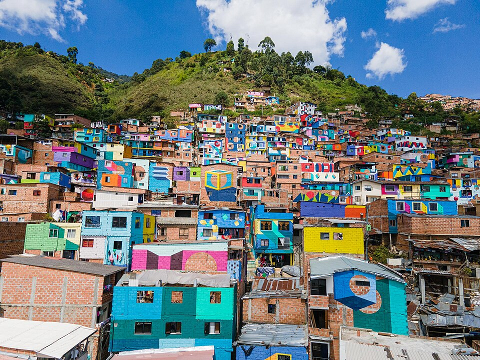

Siniestros seleccionados
En la selección actual
Movilidad · Comuna 3
Consulta dónde se han registrado siniestros y conoce las zonas que proponemos revisar en Manrique.
Registros históricos 2019 — 2025

Constelaciones · Manrique, 2023Vuelve a intentarlo. Si el problema continúa, comprueba que los archivos JSON estén disponibles.
01 / Los registros
Preparando la selección
En la selección actual
Corredor estricto de 50 m
Fuera del conteo principal
Revisión territorial
Registros históricos · 2019–2025
Consulta el alcance de estos registros en la metodología.
02 / El territorio
Acércate a la Carrera 45 y explora cada zona.
Preparando el mapa.
Arrastra para desplazarte. Acerca con la rueda o los botones. Con el mapa enfocado, usa las flechas, +, − y 0. Selecciona una zona con clic, Enter o espacio.
03 / Zonas y propuestas
Conoce los registros de cada lugar y las mejoras que podrían estudiarse.
Cargando la primera zona…
| Orden | Zona | Registros | En el corredor | Ficha |
|---|
04 / Detrás de los datos
Fuentes, criterios y límites del análisis, disponibles cuando los necesites.
Los gráficos cuentan registros de 2019 a 2025, no personas afectadas. Los cambios entre años también pueden depender de la cobertura del reporte.
50 m no es una norma vial. Es una delimitación analítica del proyecto. La cercanía al eje no demuestra que la vía haya causado el siniestro.
El límite tiene una precisión finita. Los casos de borde no amplían el indicador principal.
El territorio requiere observación directa. Faltan inspecciones, aforos y estudios técnicos para evaluar riesgo o definir obras.
Las 12 zonas conservan el estado Pendiente de inspección. Cada ficha ofrece ocho opciones de estudio: ninguna acredita una obra aprobada o ejecutada.
Las propuestas requieren inspección y validación técnica. Los costos, el diseño y la autorización deben definirse antes de una ejecución.
Las distancias se calculan en EPSG:9377. El navegador muestra coordenadas geográficas. La discrepancia conocida de CRS de la malla RAW se interpreta en memoria; el archivo original se conserva. Los identificadores y las huellas de los insumos se verifican antes de exportar.
Fotografía: Constelaciones en Manrique, 5 de mayo de 2023. Autor: Agencia para la Gestión del Paisaje, el Patrimonio y las Alianzas Público Privadas. Licencia CC BY-SA 4.0. Miniatura de Wikimedia Commons, sin retoque; el encuadre se adapta mediante CSS. Es contexto de Manrique, no una inspección ni una imagen del eje de Carrera 45.